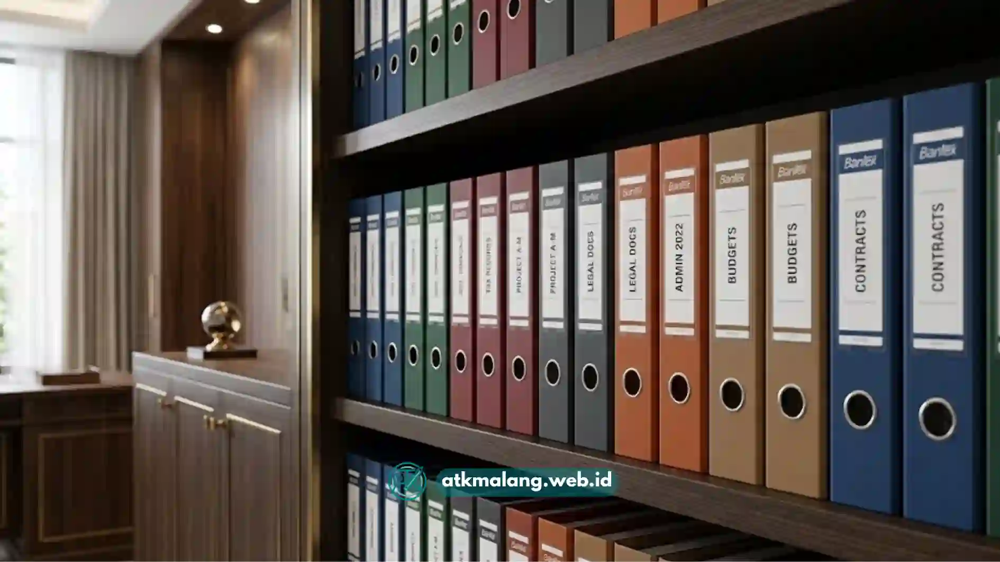

Memilih map ordner Bantex Malang yang tepat membantu arsip pajak tersusun rapi, mudah dicari, dan tahan lama.
Faktor utamanya adalah ukuran, ketebalan punggung, bahan, dan mekanisme penjepit dokumen.
- Ukuran map ordner yang umum dipakai untuk arsip pajak adalah folio dan A4.
- Ketebalan punggung memengaruhi kapasitas lembar yang bisa disimpan.
- Bahan board yang dilapisi PVC lebih tahan lembap dibanding karton biasa.
- Mekanisme ring atau klip logam menentukan kemudahan menambah dan mengeluarkan dokumen.
- Label punggung yang jelas mempercepat pencarian arsip saat dibutuhkan.
Daftar Isi
Apa Itu Map Ordner Bantex dan Mengapa Cocok untuk Arsip Pajak?
Map ordner Bantex adalah map besar berpunggung tebal dengan mekanisme ring logam di bagian dalam untuk menjepit dokumen berlubang secara rapi dan berurutan.
Untuk kebutuhan arsip pajak, dokumen seperti faktur, bukti potong, dan laporan bulanan biasanya berjumlah banyak dan harus disimpan bertahun-tahun sesuai ketentuan retensi.
Map ordner memungkinkan dokumen disusun berurutan berdasarkan tanggal atau kategori tanpa risiko tercecer, berbeda dengan map biasa yang hanya mengandalkan lipatan kertas.
Bantex dikenal sebagai salah satu merek yang banyak dipakai di instansi karena mekanisme ring yang kuat serta pilihan warna yang memudahkan sistem kode warna arsip.
Warna yang berbeda bisa dipakai untuk membedakan tahun pajak, jenis pajak, atau departemen, sehingga pencarian dokumen jadi lebih cepat saat dibutuhkan untuk audit.
Berapa Ukuran Map Ordner yang Tepat untuk Dokumen Pajak?
Ukuran map ordner yang tepat disesuaikan dengan ukuran kertas dokumen, umumnya folio untuk dokumen lama dan A4 untuk cetak modern.
Dokumen pajak sebagian masih menggunakan format folio, terutama untuk arsip lama. Sementara sebagian besar laporan saat ini dicetak dalam A4.
Sebelum membeli Alat Tulis Kantor, sebaiknya cek dulu dokumen mana yang lebih dominan agar map tidak terlalu besar atau kecil.
Jika arsip perusahaan mencampur kedua ukuran, map ordner ukuran folio umumnya masih bisa menampung kertas A4 dengan sedikit ruang lebih.
Namun untuk kerapian jangka panjang, lebih baik memisahkan arsip folio dan A4 ke dalam map yang berbeda dan diberi label yang jelas.

Pilihan map ordner Bantex terbaik untuk kebutuhan kearsipan.Bagaimana Ketebalan Punggung Memengaruhi Kapasitas Arsip?
Ketebalan punggung map ordner menentukan berapa banyak lembar dokumen yang dapat disimpan sebelum map terasa penuh.
Map ordner umumnya tersedia dalam beberapa pilihan ketebalan punggung, mulai dari yang tipis untuk arsip ringan hingga tebal untuk jumlah besar.
Untuk arsip pajak bulanan yang terus bertambah sepanjang tahun, memilih punggung yang lebih tebal sejak awal dapat menghindari kebutuhan map baru di tengah periode pelaporan.
Map dengan punggung tebal memang lebih memakan ruang rak, tetapi sangat mengurangi jumlah map yang harus dikelola oleh staf administrasi.
Sebaliknya, map tipis lebih mudah dibawa saat presentasi atau audit, namun perlu diganti lebih sering jika volume dokumen tinggi.
Bahan Apa yang Membuat Map Ordner Lebih Tahan Lama?
Map ordner dengan lapisan board tebal yang dibungkus PVC atau kertas laminasi cenderung lebih tahan terhadap kelembapan dibanding map karton polos.
Kondisi ruang penyimpanan arsip di beberapa kantor di Malang tidak selalu memiliki pengatur suhu ruangan yang stabil, sehingga rentan kelembapan.
Map berbahan board berlapis membantu melindungi dokumen di bagian dalam dari kerusakan akibat kelembapan udara yang dapat merusak kualitas kertas.
Selain itu, bagian sudut dan tepi map yang diperkuat membantu map tetap kokoh meski sering dipindahkan dari rak ke meja kerja.
Untuk arsip pajak yang wajib disimpan dalam jangka panjang, bahan tahan lama menjadi pertimbangan penting agar dokumen tetap dalam kondisi baik.
Mekanisme Ring Seperti Apa yang Memudahkan Pengarsipan?
Mekanisme ring dengan sistem tuas atau tekan yang mudah dibuka-tutup memudahkan proses menambah dan mengeluarkan dokumen tanpa merusak lubang kertas.
Beberapa map menggunakan mekanisme ring dua cincin, ada pula yang menggunakan model klip jepit yang dirancang khusus.
Untuk arsip pajak yang sering diakses ulang saat rekonsiliasi bulanan, mekanisme yang mudah dioperasikan satu tangan akan sangat menghemat waktu.
Perhatikan juga kekuatan pegas pada ring tersebut agar cukup kokoh menjepit dokumen dengan aman saat ditutup.
Ring yang terlalu longgar berisiko membuat dokumen mudah lepas, sementara ring yang terlalu kaku dapat menyulitkan saat harus menambah dokumen baru.
Apa Kesalahan Umum saat Memilih Map Ordner untuk Arsip Pajak?
Kesalahan umum yang sering terjadi adalah memilih ukuran yang tidak sesuai, mengabaikan kapasitas punggung, dan tidak konsisten dalam label warna.
Beberapa kesalahan lain yang perlu dihindari:
- Membeli map dengan warna acak tanpa sistem kategori, sehingga sulit membedakan arsip tahun tertentu.
- Menumpuk terlalu banyak dokumen pada satu map hingga ring menjadi longgar dan mudah terlepas.
- Tidak melubangi dokumen dengan rapi sebelum dimasukkan, sehingga kertas miring dan menyulitkan pencarian.
- Menyimpan map langsung bersentuhan dengan lantai tanpa alas rak yang memadai, rentan terhadap lembap.
- Mengabaikan label punggung map, sehingga staf baru kesulitan memahami sistem pengarsipan yang berjalan.
Tips Praktis Merawat Map Ordner agar Awet
Merawat map ordner agar awet dapat dilakukan dengan menyimpannya di rak tertutup, menghindari beban berlebih, dan membersihkan debu secara berkala.
Beberapa tips tambahan yang bisa diterapkan di lingkungan kantor atau usaha kecil:
- Susun map ordner secara berdiri di rak, bukan ditumpuk mendatar, agar bentuk punggung tidak melengkung.
- Gunakan pembatas atau kartu indeks di dalam map untuk memisahkan kategori tanpa menambah jumlah map.
- Hindari menyimpan map di dekat sumber panas seperti jendela yang terkena sinar matahari sepanjang hari.
- Ganti map yang sudah retak pada bagian punggung sebelum kondisi tersebut merusak dokumen.
- Lakukan pengecekan berkala setiap periode pelaporan untuk memastikan dokumen tersusun sesuai urutan.
Memilih map ordner Bantex Malang yang tepat untuk arsip pajak berarti mempertimbangkan ukuran dokumen, ketebalan punggung, bahan, serta mekanisme ring yang mudah dioperasikan.
Sistem warna dan label yang konsisten sejak awal akan sangat membantu proses pencarian dokumen di kemudian hari, terutama saat periode pelaporan tiba.
Dengan pemilihan Alat Tulis Kantor dan map yang tepat, arsip dokumen dapat tersusun rapi, aman, dan mudah diakses kapan pun dibutuhkan.